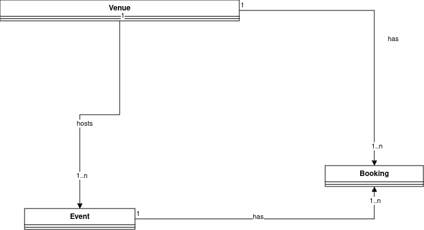

What we will cover this week
- More detailed analysis with use case texts
Use-case texts
Last week we looked at how to identify use cases and show them on a use-case diagram. The next step is to break down each use case shown on the diagram into a series of steps describing how a user will interact with the system in order to complete the use case. use-case text has two columns:
- Actor action, describing how the actor will interact with the system
- System response, describing how the system will respond.
Example use-case text: Enrol student
| Step | Actor action | System response |
|---|---|---|
| 1 | The use case begins when the admin staff selects to enrol a new student. | - |
| 2 | - | System prompts the user for the student details (name, address, date of birth, course) |
| 3 | The user enters the details specified in step 2. | - |
| 4 | - | System checks validity of details, e.g. date of birth is sensible |
| 5 | - | System allocates student ID for new student |
| 6 | - | System enrols student in university |
| 7 | - | System confirms enrolment is successful |
Alternative courses of action
Our use-case text must also include alternative courses of action. These describe how the system should react to errors, which can help us design robust systems. These go below the main use-case text. For example, in the previous use-case text:
At step 4: Date of birth is not sensible.
Staff informed that date of birth is not sensible.
Staff re-prompted for details (go back to step 3)
Example use-case text: Edit student details
This is a simplified version assuming includes or extends are not being used.
| Step | Actor action | System response |
|---|---|---|
| 1 | The use case begins when the admin staff selects to edit the student details | - |
| 2 | - | System prompts the user for the student ID |
| 3 | The member of staff enters the student ID. | - |
| 4 | - | System finds the student with that ID |
| 5 | - | System displays details of that student in editable text boxes |
| 6 | The admin staff changes the details. | - |
| 7 | - | System checks that the new details are valid (e.g. no blank strings) |
| 8 | - | System updates details of the student |
| 9 | - | System displays a confirmation message to the user. |
Alternative courses of action:
At step 4: Student with that ID does not exist on system
Staff informed that the student with that ID does not exist
Staff re-prompted for details (go back to step 2)
At step 7: New details are not valid (e.g. blank strings)
Staff informed that the new details are invalid
Staff re-prompted for details (go back to step 6)
Design-level use-case texts: assigning responsibilities to our use cases
Once you have done the basic use-case texts (so called analysis-level use case texts), the next thing to do is assign responsibilities to each system response step in the use case text. This involves deciding which domain model classes are required for each system response step.
By doing this, we are linking the user-oriented analysis (use cases) with our first design step (the domain model). Doing this will help us perform detailed system design with sequence diagrams, which is the step following use case analysis.
We will now convert each of the two use case texts above into design-level use case texts. This involves going through each system response step and thinking about which domain model classes, if any, would be responsible for each step in turn. We will highlight the domain model classes in the use-case text, and then discuss the rationale for our decisions.
Design-level use case text: enrol a student
| Step | Actor action | System response |
|---|---|---|
| 1 | The use case begins when the admin staff selects to enrol a new student. | - |
| 2 | - | The UI prompts the user for the student details (name, address, date of birth, course) |
| 3 | The user enters the details specified in step 2. | - |
| 4 | - | The UI checks the validity of the details, e.g. date of birth is sensible |
| 5 | - | The University object allocates a student ID for new student using the existing highest ID plus one. |
| 6 | - | The University object creates a Student object and adds it to the list of students. |
| 7 | - | System confirms enrolment is successful on the UI. |
Note what we have done here. We have gone through each "System response" step in the use case text and analysed it more deeply to determine which classes in our domain model have the responsibility for that step. In some cases, e.g. step 4, we don't need to involve the domain model classes because we are just doing a simple validation. But in others, the system response is more complex and requires interaction with the domain model classes. We will look at two of those steps (step 5 and step 6) in more detail and discuss the rationale for choosing the classes shown in the design-level use-case text:
- Step 5 involves allocating a student ID. What do we need for this? We need to talk to the domain model object which knows about all the existing IDs. The
Studentclass does not know this, as a singleStudentknows only about its own ID. TheUniversityclass, however, contains a list of allStudents added so far, and therefore knows about all IDs allocated so far. So theUniversityclass is the class which has the responsibility for allocating the ID. It might do this, for example, by looking at the ID of the most recently added student (the one at the end of the list) and allocate that number plus one. - Step 6 involves creating a student. If you think about this, it involves two steps: creating a student and adding that student to the list of students. The first step creates a
Studentobject, so we reference this in the design-level use-case text. The second step involves adding that student to the list of existing students. What object contains the list of existing students? It's theUniversityobject in our system, so theUniversityhas the responsibility for this step. - What class would have the overall responsibility for step 6, though, in other words, creating a student object and then adding it to the list of students? We could put this inside our UI. However, we might want to re-use the enrolment process in another application with a different UI. So instead, we can place the entire step 6 - both creating a student, and adding it to the list - inside the
Universityclass, as a method.
Design-level use-case text: edit student details
We will run through the same process of explaining the domain model classes we have chosen to allocate responsibilities for the important system response steps, which in this example are steps 4 and 8. (The other steps are trivial and only require the UI).
- In step 4 we are searching for a student by ID. As you hopefully appreciate now, it is easy to allocate a responsibility for this step. Only the
Universityknows about all theStudents (as it contains a list of them) and therefore it must be theUniversity's responsibility to find a student using its ID. It would do this by looping through the student objects in the list until it finds a match. (Or, you might use a map - the Kotlin equivalent of a dictionary - to store the students, using the ID as the key). - In step 8 we update the details of the student we have found. This only involves the specific
Studentobject we found - nothing else - therefore theStudentwill have responsibility for this step.
This gives the design-level use-case text below:
| Step | Actor action | System response |
|---|---|---|
| 1 | The use case begins when the admin staff selects to edit the student details | - |
| 2 | - | The UI prompts the user for the student ID |
| 3 | The member of staff enters the student ID. | - |
| 4 | - | The University object finds the Student object with that ID |
| 5 | - | The UI displays details of that student in editable text boxes |
| 6 | The admin staff changes the details. | - |
| 7 | - | The UI checks that the new details are valid (e.g. no blank strings) |
| 8 | - | The Student object we found in step 4 is updated with the new details. |
| 9 | - | The UI displays a confirmation message to the user. |
Exercise
- Draw up a use case diagram for these use cases from the live music venue scenario from last week:
- Search for events by name (all users)
- Book an event (all users)
- Add an event (admin only)
- Modify an event (admin only)
- Delete an event (admin only)
- Cancel a booking (all users)
- Prepare an analysis-level use-case text for "add an event"
- Prepare an analysis-level use-case text for "book an event". Assume the venue has a maximum capacity.
- Prepare a design-level use-case text for "add an event". Assume the simplified domain model below.
- Prepare a design-level use-case text for "book an event". Assume the simplified domain model below.
